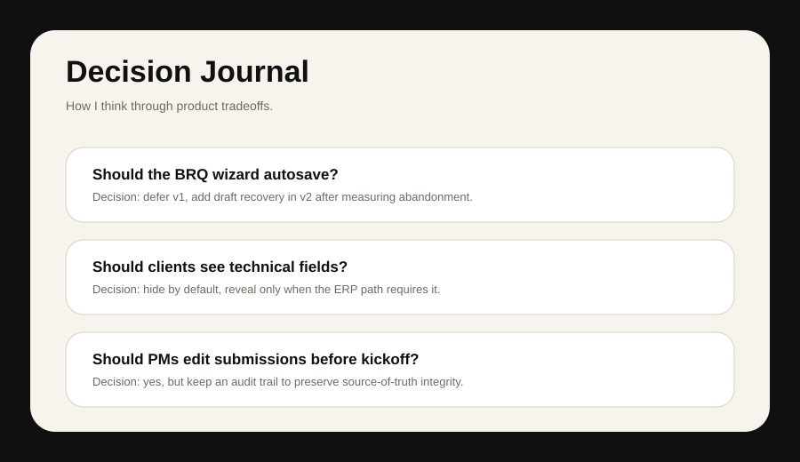

Product Thinking
Decision Journal
Recruiters usually see outcomes. This page shows the product thinking underneath: options, tradeoffs, decisions, and what I would revisit.

Should the BRQ wizard autosave?
Decision: Defer v1. Autosave adds complexity, privacy considerations, and state management. Ship a shorter flow first, then add draft recovery if analytics show abandonment.
Should clients see technical fields?
Decision: Hide by default. Reveal only when the ERP or integration path requires it. The client should not feel punished for not knowing technical implementation language.
Should PMs edit submissions before kickoff?
Decision: Yes, but preserve the original submission. PMs need cleanup ability, but source-of-truth integrity matters.
Should the project include a Spotify redesign?
Decision: Keep it secondary. It shows product critique, but the BRQ case is stronger because it is real and tied to my career.